Master sustainability strategy, governance, and practice in seven modules. Learn the skills that matter to Australian organisations and build your career in purpose-driven work.
Sustainability isn't abstract. It's how organisations create value, manage risk, and build resilience. This masterclass teaches you to think like a sustainability professional.
Whether you're pivoting careers, upskilling in your current role, or building expertise in sustainability strategy, this course takes you from fundamentals to practical application. You'll learn frameworks used by major companies, understand how governance drives real change, and find clarity on your path forward.
Start with Module 1. Work through in order. Each module builds on the one before.
Unpack the evolution from CSR to ESG. Understand the Triple Bottom Line, the frameworks that matter, and why sustainability has become central to business strategy.
Start module →Explore the three dimensions: strategy, disclosure, and practice. Learn the frameworks (GRI, TCFD, TNFD, SBTi) that guide corporate sustainability work.
Start module →Discover why governance is foundational. Understand board structures, power dynamics, and why First Nations voices must be included in decision-making.
Start module →Learn to assess whether companies are genuine or greenwashing. Spot what's missing. Understand materiality. Read reports like a critical analyst.
Start module →Deep dive into five pillars: climate, water, pollution, biodiversity, and circular economy. See how they connect. Identify where jobs exist in each area.
Start module →Map your skills to sustainability careers. Explore four career archetypes. Identify skill gaps. Find clarity on your next move. Introduction to the Clarity Call.
Start module →Synthesise everything. Understand the big picture. Make your decision: go it alone, invest in a Clarity Call, or join the Accelerator programme for deeper support.
Start module →After you complete the masterclass, two pathways are available.
The Sustainability Career Clarity Call ($450, 60 minutes) is for people who want focused guidance on their next move. You'll leave with clarity on your path.
The Sustainability Career Accelerator Programme is for people ready to commit to transformation. It's a structured, supported journey over 12 weeks.